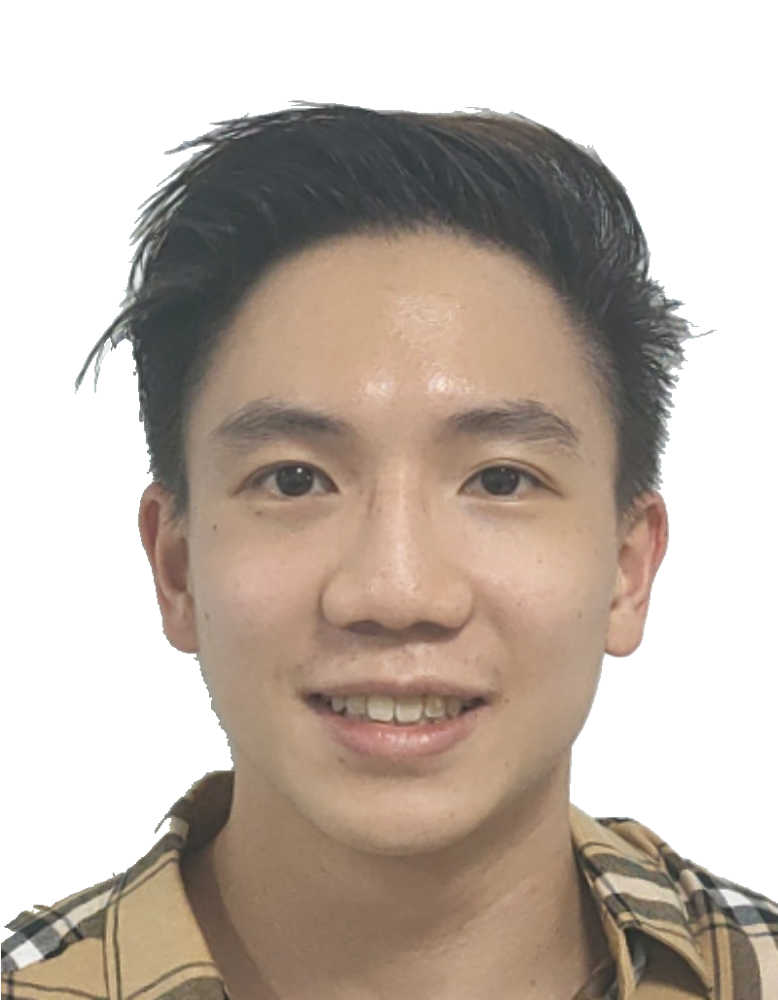

Phua Anson

Summary
I'm a final-year undergraduate majoring in Data Science and Analytics with a minor in GIS.
With a strong knack for machine learning and data-driven solutions, I want to channel these skills into creating real-world impact.
I am constantly driven to discover unique internships that will broaden my understanding and prepare me for my future in the data field after completing my studies.
Education
Bachelor of Science (Hons), Data Science and Analytics - National University of Singapore (2020 - 2024)
Minor in Geographical Information System (GIS) - National University of Singapore (2022 - 2024)
Work Experience
-
Sustainability Analyst Intern (Data Analytics) - ESGold Sustainability Pte. Ltd
Sep 2023 - Dec 2023
- Spearheaded data collection efforts for ESG metrics, employing data preprocessing and transformation methods using Power Query and R/Python to prepare datasets for analytical purpose
- Contributed to the development and maintenance of ESG data dashboards, using data visualisation software like Tableau to communicate complex sustainability metrics to stakeholders effectively
- Leveraged data analytics to critically evaluate and compare ESG reports, identifying best practices and benchmarks in sustainability reporting
-
Assistant Instructor - Aikido KenshinKai
Jan 2021 - Present
- Appointed as a kids teacher, guiding students from diverse backgrounds and developing strong interaction and instructional skills
- Honed patience and dedication in working with students, fostering an inclusive learning environment and promoting skill development
-
External Relations Team Leader - AIESEC in Singapore
Aug 2020 - Jan 2021
- Led B2B sales of AIESEC's Sustainability programs to local startups/companies and built/maintained existing partnership relationships
- Spearheaded January Recruitment Organizing Committee in 2021 and attracted over 150 student sign-ups for Info Talk, Assessment Centre, Interviews and Induction Camp
Skills
- Data Analytics:⭐️⭐️⭐️⭐️
- Machine Learning:⭐️⭐️⭐️⭐️⭐️
- Database Management:⭐️⭐️⭐️
- Communication:⭐️⭐️⭐️⭐️⭐️
- Management:⭐️⭐️⭐️⭐️⭐️
Awards and Certifications
- Activating Leadership Award - AIESEC in Singapore (May 2021)
- Jump Rope Coaching Basic Level (Theory and Technical in Jump Rope / Rope Skipping) - Jump Rope Federation Singapore (Mar 2022)
Other